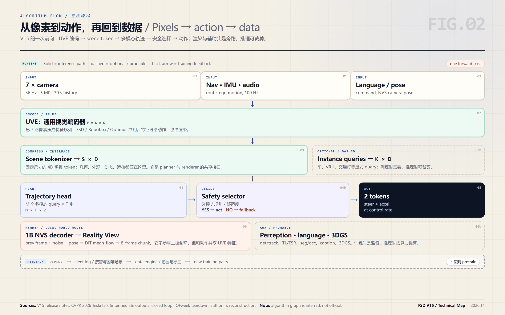
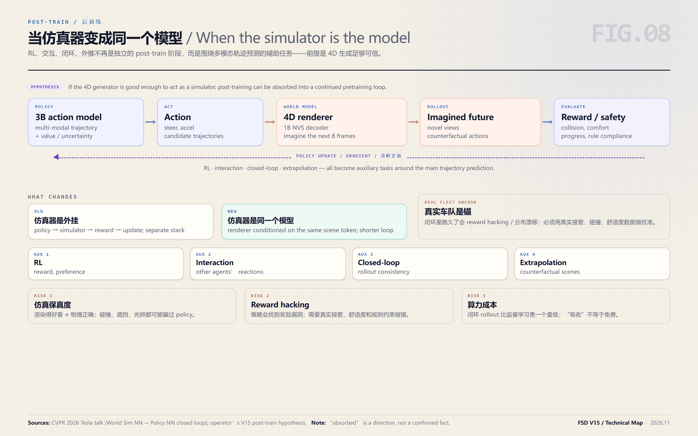
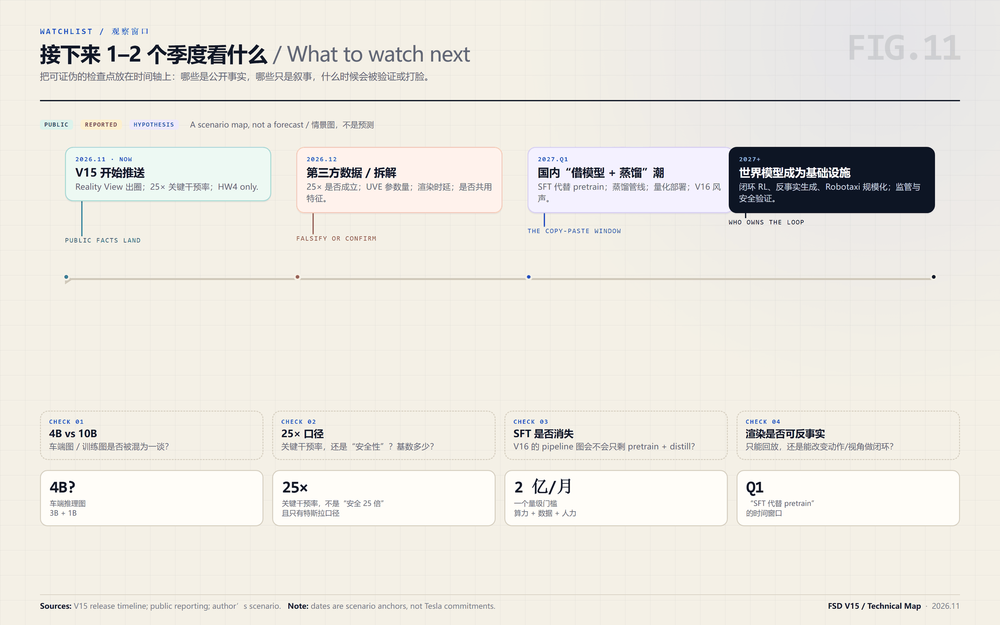

先看结论：V15 改的不是一个功能，而是表征的用法
V15 最值得注意的，不是“25 倍”，也不是刷屏的 Reality View，而是动作与渲染从同一份 UVE 特征 fork。这意味着渲染不是给旧模型加一个 UI 外挂，而是逼着驾驶表征变成可重建、可查询、4D 一致的场景表征。
共享表征是主轴
UVE 以 18 Hz 输出特征，一路给 3B 动作模型，一路给 1B 渲染模型。两条路径共享同一份张量，渲染梯度因此能反过来塑造编码器。
4B 与 10B 是两件事
3B + 1B = 4B，是车端推理图；公开报道的“10B”更可能是训练/云端教师。特斯拉没有澄清，不能把两个数字混着用。
训练阶段在塌缩
V14 的“预训练 → SFT → 后训练”正在变成“通用预训练 → 蒸馏/压缩 → 部署”。SFT 的数据没有消失，消失的是它的“独立阶段”身份。
4D NVS 是新的核心任务
沿轨迹做 3DGS 重建，再渲染任意新视角。相比“预测下一帧”，NVS 无法用 2D 捷径糊弄，必须编码深度、遮挡和动态一致性。
产业门槛上移
竞争单位从“有没有端到端”变成“有没有通用预训练栈 + 蒸馏管线”。你给出的“月投入 2 亿元”是一个量级门槛，不是财务报表；它买到的是算力、数据、标注、仿真和人才的组合。
V15 把“驾驶模型”改造成了“能开车、也能渲染世界的通用表征模型”，再用蒸馏把它塞进 4B 的车端推理图。真正的新东西是监督信号的密度和结构，不是某一个头。
阅读约定：本文把信息分成四档——PUBLIC 官方发布/公开演讲；REPORTED 可信媒体报道但未独立核实；INFERRED 从架构、时延、参数量推导；HYPOTHESIS 你提供的判断或本文推测。所有推断都尽量给出可证伪的检查点。
先对齐事实：V15 到底发布了什么
把营销词剥离后，V15 的公开变化里只有两条是底层：新的 UVE 视觉编码器，和 Reality View 生成式实景。其余大多是驾驶行为的修补。
驾驶网络的升级
新视觉编码器；路牌、小动物、路面杂物、铁链、坑洼、深积水识别改进；学区/恶劣天气速度控制；测速摄像头前减速；自行车架模式；DMS 支持帽子/墨镜；导航与泊车路线学习。官方称关键干预率提升 25 倍。
车机上的生成式实景
从车顶虚拟相机实时生成周围世界；不是摄像头回放，也不是游戏引擎贴图；官方称是“novel view synthesis”，由同一个端到端驾驶模型在开车的同时渲染。支持点击目标点、全屏/分屏。
25× 关键干预率
证据等级: 官方口径
准确含义 / 容易误读的点: 是“critical intervention rate”相对 V14 的改善，不是“安全性 25 倍”，也不是“提升 25%”。特斯拉没有公布 V14 的基数和统一定义，需要第三方车队数据验证。
10B 参数
证据等级: 媒体报道
准确含义 / 容易误读的点: 马斯克/Ashok 此前说从约 1B 增到约 10B。这个数字没有写进发布说明，也没有说明统计范围。
3B + 1B
证据等级: Musk 帖文
准确含义 / 容易误读的点: 3B 动作模型 + 1B 渲染模型，合计 4B。截图经二手传播，但多个技术博主交叉引用；仍建议等官方文档。
UVE 18 Hz
证据等级: 社区拆解
准确含义 / 容易误读的点: 通用视觉编码器每帧输出特征的节拍；与 36 Hz 相机输入不是一回事。
8 帧 / 4 个 UVE 周期
证据等级: 社区推算
准确含义 / 容易误读的点: 渲染按 chunk 生成，摊到 4 个 UVE 周期；UI 约 36 fps，最低时延约 222 ms，实测约 300 ms。
½ TRIP 算力
证据等级: 官方口径
准确含义 / 容易误读的点: 是“一个 TRIP 加速器的一半”，不是“半颗 AI4”。按第三方拆解每颗芯片 3 个 TRIP 估算，约占单芯片 NPU 算力的 1/6。
HW4 only
证据等级: 官方口径
准确含义 / 容易误读的点: V15 只支持 AI4/HW4；HW3 继续走 v14 Lite 分支。
4B ≠ 10B：4B 是“车端推理图”（3B 动作 + 1B 渲染）；10B 更可能是“训练/云端教师”，或包含其他头/集成的总模型。25× ≠ 25%：官方说的是关键干预率提升 25 倍，不是 25% 的改善，也不是碰撞率直接下降 25 倍。两组数字的统计口径不同，不能相乘或互换。
还有一个容易被忽略的细节：V15 的发布说明说新视觉编码器“用数百万条互联网视频训练”，并在 FSD、Robotaxi、Optimus 之间共用。这句话的信息量比“25 倍”更大——它意味着特斯拉把驾驶模型接到了一个通用视觉预训练栈上，而不是继续只喂车队数据。
另一个边界：V15 仍是 supervised 版本，驾驶员全程负责；它和 Robotaxi 同源，但不是无人驾驶。不要把“同源软件栈”误读成“已经无人化”。
V14 的三段式：它解决了什么，又卡在哪里
要理解 V15，先把 V14 的“三段式”摆在桌上：预训练 → SFT → 后训练。这不是三个模型，而是同一个模型的三个训练阶段；每一段解决不同的问题，也留下不同的债。

V14 面对的“维度灾难”
按特斯拉在 ICCV 2025 / CVPR 2026 的公开口径：7 路摄像头 × 36 Hz × 500 万像素 × 30 秒历史，按 5×5 像素 patch 折算，输入约 20 亿 token；再加上导航、100 Hz 运动学、48 kHz 音频。输出只有 2 个 token：转向和加速度。端到端要学的，是 20 亿 → 2 的因果映射。
这就是为什么 V14 必须在中间塞入大量“可解释信号”：3D 占据与流、车辆/行人/骑行者、交通灯与标志、道路边界与车道、限速、交互概率，以及自然语言推理。它们既是监督，也是安全审查的抓手。
V14 的 compact token
按你提供的工程信息，V14 的 compact token 包含两部分：implicit scene token（隐式场景）和 some explicit instance token（显式实例，如车、VRU、交通灯、车道）。Trajectory head 通过 cross-attention 与这些 token 交互，输出多模态轨迹。
它为什么有效
显式实例可解释、易监督、易做安全规则；SFT 把人类驾驶的“价值判断”压进策略；post-train 用 RL/闭环修 reward。三者各司其职。
它卡在哪里
实例列表是信息瓶颈（“鸡 vs 鹅”：列表丢掉的语义再也拿不回来）；SFT 分布窄；post-train 昂贵且与仿真器耦合；时序视图预测可以用 2D 捷径，不强制 3D 一致。
V14 的遗产不是某个头，而是“中间监督”这条路：让黑箱在输出动作之前，先输出一堆可被检查的东西。V14's real legacy is intermediate supervision, not a particular head.
V15 没有抛弃这条路，而是把它换了接口：从“实例列表”换成“4D 场景 token”，从“预测下一帧”换成“渲染新视角”，从“三段式”换成“通用预训练 + 蒸馏”。这就是下一节要展开的结构。
一个编码器，两条解码路径
V15 最硬的结构事实，是 UVE 一路 fork 出 3B 动作模型和 1B 渲染模型。这不是“驾驶模型 + 一个生成模型”的拼装，而是同一份特征同时服务动作与像素。

把这条前向展开成网络结构，就是下面的“两座塔”：3B 动作塔负责规划与控制，1B 渲染塔负责新视角。

UVE：通用的“视觉节拍”
UVE 以 18 Hz 输出特征序列，FSD、Robotaxi、Optimus 共用同一个编码器。它用数百万条互联网视频做通用视觉预训练，再在车队数据上对齐驾驶。这个设计的直接后果是：编码器不再只对“驾驶相关物体”敏感，而是对通用世界（材质、光照、动物、杂物、遮挡）更敏感。
Fork：为什么“共享特征”很重要
3B 动作模型和 1B 渲染模型都从 UVE 特征 fork。渲染器不是拿一段独立视频去“贴图”，而是用同一份场景表征去条件生成新视角。这样一来，渲染损失会反传回 UVE，迫使特征同时满足两件事：
- 对动作有判别力：该影响刹车的细节不能丢；
- 对渲染有一致性：遮挡、深度、动态、光照要能在新视角下自洽。
这就是“共享表征”比“多挂一个生成模型”强的地方：它不是增加一个输出，而是增加一个约束。
1B 渲染器：conditional mean-flow 是什么
按社区拆解，渲染器是一个 1B 的 conditional mean-flow 模型（mean-flow 是 flow matching 的变体，学习区间平均速度场），以 UVE 特征为条件，输入“上一帧 + 噪声”，输出当前视图。它不需要从零重建整帧，而是预测变化量；因此 token 数、NFE 和算力都能压下来。
调度上，它一次生成 8 帧 chunk，摊到 4 个 UVE 周期；UI 约 36 fps，玻璃到玻璃时延最低约 222 ms，实测约 300 ms。这套数字是社区按 “1/2 TRIP per UVE frame at 18 Hz” 推算的，不是特斯拉官方披露。
“½ TRIP”是一个 TRIP 加速器的一半，不是“半颗 AI4”。按第三方拆解，AI4 每颗芯片有 3 个 TRIP；如果这个拆解仍成立，渲染约占单芯片 NPU 算力的 1/6。这解释了为什么特斯拉敢在车上跑生成式实景：它吃的是“剩余算力”，不是主控制环的预算。
4B 与 10B：把“范围”说清楚
车端动作模型
规模: 3B
证据: Musk 帖文
说明: 输出轨迹/控制，带辅助头。
车端渲染模型
规模: 1B
证据: Musk 帖文
说明: NVS decoder，conditional mean-flow。
车端推理图合计
规模: 4B
证据: 相加
说明: 3B + 1B；是否还有别的头/模型未说明。
训练/云端教师
规模: ~10B
证据: 媒体报道
说明: 可能包含全任务、全分辨率、长时域模型；范围未澄清。
完整系统
规模: 未知
证据: 待验证
说明: 若还有数据引擎、仿真器、其他专家，则“总参数”没有意义。
所以，最合理的读法是：4B 是部署图，10B 是训练图。这两个数字不是矛盾，而是不同 scope；但在特斯拉澄清之前，任何“V15 只有 4B”或“V15 有 10B”的绝对说法都过于自信。
从三段式到两段式：Grok 到底在哪一层？
如果 V15 真的把 SFT 吸收进了 pretrain，它必须回答一个问题：“通用”从哪里来？你的判断是“Grok 跟 FSD 一起训练”。这句话至少可以拆成三种完全不同的含义，证据强度也完全不同。
阶段在塌缩，不是任务在消失
V14 的三段式是“数据 → 预训练 → SFT → 后训练 → 部署”。V15 更像是“通用预训练（含规划任务）→ 蒸馏/压缩 → 部署”。变化不在任务清单，而在任务的组织方式：
- SFT 数据仍在：人类驾驶轨迹、高质量场景、接管/纠正数据仍然是监督信号；只是它们不再单独组成一个阶段，而是作为 pretrain 里的高权重、低噪声退火项。
- Post-train 变成课程：RL、交互、闭环、外推不再等 pretrain 结束后才开始，而是作为 pretrain 后期的课程/辅助任务，和主线的多模态轨迹预测一起优化。
- Data-task pairing 变了：同一段驾驶 clip 可以同时产出 NVS 对（位姿）、感知标签、规划轨迹、语言描述；不需要为“预训练语料”和“SFT 语料”维护两套采样器。
三个阶段，三种数据
pretrain 用大规模未标注/弱标注视频；SFT 用高质量驾驶轨迹；post-train 用仿真与 reward。数据分布与目标都不同。
一个阶段，四种监督
通用预训练同时吃 NVS、感知、规划、语言；SFT 退化为高质量退火；post-train 退化为课程。
第二阶段是压缩
云端教师 → 4B 学生；复用 task/data mix；量化部署。它不是“再训一次”，而是“把能力搬过去”。
“Grok + FSD”的三种读法
A. 共享通用预训练栈
具体含义: Grok/xAI 的通用视觉/语言/视频预训练数据、目标、架构经验，被用于 FSD 的 UVE 和 general pretrain。
证据: 间接 UVE 用互联网视频、FSD/Robotaxi/Optimus 共用编码器。
本文判断: 最可能成立。这与“general pretrain”叙事完全一致。
B. Grok 权重直接 co-train
具体含义: Grok 模型权重与 FSD 网络联合训练，梯度互相流动。
证据: 无公开证据 Grok 目前公开可见的角色更多在座舱/语音，而不是 FSD 训练。
本文判断: 待验证。即便有，也更可能是“同一套预训练配方”，而不是把 Grok 权重塞进车端。
C. Grok 作为数据引擎
具体含义: 用 Grok/VLM 做自动 caption、场景检索、失败归因、数据清洗。
证据: 合理 大规模自动标注是行业标配。
本文判断: 很可能成立。但它不改变模型结构，只改变数据效率。
如果“Grok 跟 FSD 一起训练”指的是 A + C（共享通用预训练栈 + 用大模型做数据引擎），这与公开信息高度一致；如果指的是 B（Grok 权重直接进 FSD 训练图），目前没有公开证据。两种说法在传播中很容易被混为一谈，但工程含义差很远。
反方：SFT 不会真的消失
从优化角度看，任何“在高质量驾驶数据上做最后一段监督训练”的过程，都是 SFT；把它叫“退火”“对齐”“decay”只是命名。真正的变化是：SFT 不再是一个独立的工程阶段，不再需要单独的 dataloader、单独的 checkpoint、单独的验收。它变成了 general pretrain 的一个 schedule 区间。
这也是为什么“V15 去掉了 SFT”这句话，严谨的说法应该是：V15 取消了 SFT 的独立阶段，但没有取消 SFT 的数据与目标。
4D NVS：把“里程”变成“无限视角”
如果只能挑一个技术点来解释 V15 的“basic 能力”为什么变强，我会选 4D novel view synthesis。它不是一个 UI 功能，而是一个比“预测下一帧”更难、更 3D、更逼模型理解世界的自监督任务。

为什么 NVS 比 temporal view prediction 更难
时序视图预测（用过去帧预测下一帧）有一个天然的 2D 捷径：只要学会“复制 + 局部变形”，就能在多数帧上把 loss 降得很低，而不需要真正的 3D 理解。NVS 不一样：给你一个没见过的相机位姿，要求渲染出该视角的画面。要做得对，模型必须隐式地学会深度、遮挡、物体背面、动态一致性。
预测下一帧
2D shortcut：复制上一帧、学局部运动。对 planning 有用的几何信息不一定被逼出来。
渲染新视角
必须编码 depth / occlusion / dynamics；渲染误差会直接惩罚“看起来对、几何错”的表征。
数据闭环：从车队日志到 NVS 训练对
- 车队日志：7 路摄像头、36 Hz、30 秒 clip；每帧带 ego pose 与相机外参。
- 轨迹 / 位姿：自车轨迹和相机位姿是 NVS 的条件；它们可以离散成 token，也可以文本化。
- 3DGS 重建：沿轨迹做动态感知的高斯重建；特斯拉公开讲过“生成式 3D Gaussian”，重建约 220 ms。
- 新视角渲染：在空间（左/右/上/下）和时间（前/后几帧）上采样虚拟相机，渲染 RGB、depth、segmentation、flow。
- 训练对：把“条件（位姿/语言）+ 目标（新视角）”喂给 UVE/scene token，作为 general pretrain 的重任务。
这条闭环的经济学很强：一次采集，多次监督。同一段 30 秒日志，不再只产出一条“人类驾驶轨迹”，而是可以产出成百上千个 NVS 训练对。这就是“把里程变成无限视角”的意思。
Pose as language
你提到“4D video NVS 中 pose 本身是 language input”，这是很关键的一点。相机位姿可以被编码成文本/离散 token，例如“把相机向前移 3 米、抬高 1.5 米、向左看 20°”。这样一来，同一个 scene token 同时被两种条件查询：
- 动作条件：自车接下来怎么走；
- 相机条件：从哪个虚拟视角看这个世界。
语言在这里不是“解释”，而是一种通用的条件接口。它让 NVS、视频生成、场景编辑、甚至反事实 rollout 共享同一套条件语法。
“local world model”不是“云端 simulator”
1B 渲染器是一个局部世界模型：短时域、条件生成、视角一致。它可以在车上实时跑，但它不是那个可以无限 rollout、做对抗场景、做闭环评估的云端神经模拟器。两者是同一个技术家族的不同规模：
时域
车端 1B renderer: 8 帧 chunk / 短时
云端 world simulator: 长时域 rollout
条件
车端 1B renderer: UVE 特征 + 上一帧 + 位姿
云端 world simulator: 状态 + 动作 + 场景编辑
用途
车端 1B renderer: Reality View、NVS 监督
云端 world simulator: 闭环评估、RL、对抗样本
算力
车端 1B renderer: ½ TRIP / UVE frame
云端 world simulator: 数据中心级
GS 重建质量、动态物体、遮挡区域、光照变化都会影响 NVS；模型可能在遮挡区“编”出不存在的细节。NVS 指标好看，不等于 planning 指标变好——这是 V15 需要证明、但目前还没有公开证明的事。
Compact token：从“实例列表”到“4D 场景”
V14 的 compact token 是“implicit scene + explicit instance”。V15 很可能把重心移到 implicit scene，把 instance 从“接口”降级为“可选查询”。这不是审美选择，而是 NVS 逼出来的结果。

V14：实例是接口，也是瓶颈
显式实例的好处是显然的：可解释、可监督、可做安全规则、可做可视化。但它同时是一个信息瓶颈。感知输出“鸡”和“鹅”的框，规划需要知道“鸡在过马路（要等）”和“鹅在路边发呆（可绕）”；一旦这个语义在实例列表里丢了，后面的网络再强也拿不回来。
而且，实例列表是变长的：不同场景有不同数量的车、人、交通灯。Trajectory head 对它做 cross-attention，计算图会随场景变化，工程上更难做确定性时延。
V15：场景是接口，实例是查询
V15 的方向更可能是：以一个固定尺寸的 4D scene token 为主接口，把 instance 变成从 scene token 里“query 出来”的可选头。这样做有三个直接收益：
- 表征更密：4D NVS 迫使 scene token 编码几何、外观、动态；规划拿到的不是一个“物体清单”，而是一个可查询的世界。
- 计算更稳：固定尺寸张量的 attention 更便宜、更可预测；没有变长列表，时延更可控。
- 推理可裁剪：辅助头（感知、语言、可视化）可以在车端关掉或降频，只保留主线和渲染。
“弱化 instance”不等于“删掉 instance”
更严谨的说法是：instance 从“接口”降级为“查询”。训练时仍然需要实例监督（检测、跟踪、分割、占据），否则安全验收过不了；但这些头可以从 scene token 解码，而不是作为独立 token 集合参与规划。推理时，它们可以被裁剪或异步执行。
这会带来一个可观察的预测：V15 的车机可视化里，传统“框 + 图标”会减少，更多是稠密的、生成式的场景；但这不等于感知头消失了，只是它不再占据规划接口的中心。
固定尺寸 scene token + 直接 cross-attention，比“变长实例列表 + 多级融合”更容易做 kernel fusion、cache 复用和确定性时延。渲染器还可以被调度到主控制环的剩余算力上——这正是“½ TRIP”能成立的前提。
四类任务：如果 SFT 消失，训练目标长什么样
把 SFT 吸收进 pretrain，意味着训练目标不再是“驾驶 + 几个辅助头”，而是四类任务的加权混合。关键不是任务数量，而是每一类任务能否从同一段数据里被高效地“配对”出来。

四类任务的分工
4D 视频生成 / 世界模型
4D NVS、视频生成、未来帧预测、仿真。密度最高、算力最重，是 V15 新增的“主任务级”监督。
驾驶感知
检测/跟踪、交通灯/标志、实例/语义/占据分割、depth/flow。标签最成熟，也是推理时最容易被裁剪的辅助头。
多模态轨迹预测
主线任务：多模态轨迹、交互、RL、闭环、外推。监督最稀疏，必须靠仿真和闭环补足。
语言 / 调试
caption、VQA、CoT、数据引擎、失败归因。不是主线，但决定可解释性、检索和自动标注效率。
把四类任务放回训练系统，就是下面这张框架图：数据引擎先做配对，通用预训练把 SFT 退化为高质量退火，最后蒸馏到 4B 车端。

一段数据，四类监督
四类任务能放在一起训，前提是 data-task pairing 做得足够细。同一段 30 秒 clip 可以同时产出：
4D NVS
数据来源: 车队 clip + 3DGS
标签/条件: 新相机位姿、时间偏移
用途: 逼 scene token 4D 一致
感知
数据来源: 车队 clip + 自动/人工标签
标签/条件: 框、track、mask、occ、depth
用途: 可解释、安全、蒸馏监督
规划
数据来源: 人类驾驶轨迹 + 仿真
标签/条件: 多模态未来、reward、接管
用途: 主线策略
语言
数据来源: VLM 自动 caption + 人工审核
标签/条件: 场景描述、决策理由、QA
用途: 检索、调试、CoT
通用视觉
数据来源: 互联网视频
标签/条件: 自监督/视频生成
用途: 世界先验、长尾泛化
这张表解释了为什么“去掉 SFT”在工程上是可行的：不是 planner 不学了，而是 planner 的监督被放进了同一张配对表里，和 NVS、感知、语言一起采样。SFT 只是这张表里“权重最高、噪声最低”的那一行。
权重与 schedule
一个合理的 schedule 是：
- 通用视觉 warm-up：互联网视频 + 通用 NVS，建立世界先验；
- 车队 NVS + 感知：加入 3DGS 重建、新视角、检测/分割/占据；
- Planner 混合：加入多模态轨迹、交互、闭环/RL 课程；
- 高质量退火：提高人类驾驶、接管/纠正、困难场景的权重；
- 蒸馏：把云端教师的任务结构和表征搬到 4B 学生。
这不是唯一的 schedule；也可以全程混合、只调权重。重点在于：没有一个“只跑驾驶数据”的独立 SFT 阶段。
反方：四类任务会互相抢容量
多任务不是免费的。4D NVS 会占用大量 decoder 容量和算力；感知头会拉高分辨率需求；语言头会引入 token 长度；planner 又要求低时延。真正的难点是任务平衡与评估：如果 NVS 指标涨了、planning 指标没涨，那它只是好看的辅助任务。
无论任务怎么合并，主线仍然是 multi-modal trajectory prediction。4D NVS 是让表征变强的“重辅助”，不是替代规划。判断 V15 成败的最终指标，仍然是干预率、舒适度、通行效率和闭环安全，而不是渲染画质。
后训练会被吞掉吗？
你的判断是：如果 4D video generator 已经能当 pretrain simulator，post-train 也可以吸进 pretrain，RL / interaction / closed-loop / extrapolation 都作为多模态轨迹预测的辅助任务。这个方向合理，但边界比“吸收”更模糊。

V14 的 post-train 为什么独立
因为仿真器和策略是两套东西：策略在真实数据上做模仿学习，然后在仿真器里做 RL/闭环评估；仿真器负责生成状态，策略负责动作，两者通过接口交换。这个接口既是工程边界，也是组织边界。
V15 的变化在于：如果 4D 渲染器能条件于动作生成反事实未来，它就不只是“回放”，而是“可交互的局部模拟器”。这时，策略可以在同一个模型家族里 rollout，RL/交互/闭环/外推就可以作为辅助任务，和主线的轨迹预测一起训练。
“吸收”更准确的说法：课程化
这不是“post-train 消失了”，而是“post-train 变成了 pretrain 后期的一段课程”。区别在于：
- 数据：从“离线状态-动作对”变成“在线/半在线 rollout + 真实车队锚点”；
- 目标：从“模仿”变成“模仿 + reward + 安全约束 + 交互一致性”；
- 调度：不再是“先 pretrain 再 post-train”，而是“在 pretrain 的某个区间加大 RL/闭环权重”。
如果这个方向成立，V15 的“训练范式”确实是两段式；但“post-train”作为一个职能仍然存在，只是被重新分配到了 pretrain 的课程和 distillation 的微调里。
四个硬约束
仿真保真度
渲染得好看不等于物理正确。碰撞、遮挡、光照、其他交通参与者的反应，都可能骗过 policy。
Reward hacking
策略会找到奖励漏洞。必须用真实接管、碰撞、舒适度、规则约束做锚，不能只靠渲染器里的 reward。
分布漂移
闭环里跑久了，策略会进入自己生成的状态分布；需要真实车队数据不断校准。
算力成本
闭环 rollout 比监督学习贵一个量级。“吸收”不等于免费，可能只是把账单从 post-train 移到 pretrain。
如果 4D 生成器只能“回放”训练时见过的轨迹，它就不是 simulator，只是 renderer；如果它能接受反事实动作（“如果此时左转，世界会怎样”）并生成物理上合理、时序一致的未来，它才有资格成为 post-train 的载体。这是 V15 最值得观察的技术分水岭。
3B + 1B：产品化的算术
V15 的模型规模不是“越大越好”，而是一道非常产品化的算术题：3B 动作主干 + 1B 渲染解码器，在 AI4 的剩余算力里跑出可接受的画质和时延。

为什么是“深 DiT + 低分辨率”
你提到“堆叠的 DiT 深度还是非常深，但是分辨率不大；超分的外挂不难，时序超分也不难”。这与“把容量花在语义和时序一致性上，把像素交给产品层”的思路一致：
- 语义优先：场景理解、遮挡关系、动态一致性需要深网络；
- 像素后置：UI 分辨率可以通过空间超分放大；帧率可以通过时序超分/插帧补足；
- 算力可控：生成低分辨率 + 外部超分，比端到端生成高分辨率便宜得多，也更容易做确定性时延。
这是“纯工程小 tricky”，但它决定了用户看到的是“糊的 4B”还是“像 GTA 的 4B”。产品化的胜负，很多时候就在这些不改变模型训练的外挂上。
时延预算：把数字摊开
UVE 特征
数字: 18 Hz
含义: 每 55.6 ms 一帧特征；这是主节拍。
渲染 chunk
数字: 8 帧 / 4 周期
含义: 一次生成 8 帧，摊到 4 个 UVE 周期；最低约 222 ms。
UI 刷新
数字: ~36 fps
含义: 27.8 ms/帧；通过 chunk 内复用/插值维持。
玻璃到玻璃
数字: ~300 ms
含义: 社区实测/推算；不是官方指标。
算力
数字: ½ TRIP / UVE frame
含义: 一个 TRIP 加速器的一半，不是半颗 AI4。
蒸馏不是“压缩一下”
如果 V15 的范式真是“pretrain → distillation”，那蒸馏的内容至少包括四层：
- 特征/表征：UVE 与 scene token 的中间特征，让学生学会“看世界的方式”；
- 任务结构：四类任务的权重、data-task pairing、课程顺序；
- 输出：轨迹、渲染、感知、语言、不确定性；
- 部署约束：量化、剪枝、算子融合、确定性时延。
这也是为什么“复用 pretrain 的 task 配比和数据配比”很重要：蒸馏不是从零教一个 4B 学生，而是让它在一个已经验证过的任务分布里，模仿教师的行为和表征。
能力迁移
教师 → 学生：特征、logits、渲染、轨迹、语言、不确定性。目标是“会同样的任务”，不是“参数更小”。
表示压缩
FP32 → FP16/INT8/FP8，QAT、剪枝、算子融合。目标是“同样的能力，更低的带宽/功耗”。
产品层的四个外挂
- 空间超分：把低分辨率渲染放大到 UI 分辨率；
- 时序超分/插帧：把 chunk 之间的跳变补平，维持 36 fps 的观感；
- 遮挡补全：对摄像头盲区做合理推断，而不是简单回放；
- UI 合成与降级：轨迹箭头、可点击目标、地图叠加；渲染失败时的安全回退。
这些外挂不改变模型训练，但改变产品体验；它们也是“为什么特斯拉能先做出来”的一部分——不是算法 alone，而是算法 + 芯片 + 座舱 + 产品团队一起调。
4B 不是“小模型”，而是“被任务结构压过的模型”。它的能力上限由教师和任务配比决定，下限由蒸馏/量化/时延工程决定。把 4B 当成“缩小版 10B”会低估蒸馏的作用；把 4B 当成“另一个 10B”会低估部署约束。
产业含义：护城河正在上移
V15 真正让国内公司紧张的，不是 25 倍，而是它展示了一条“通用预训练 + 蒸馏”的完整路径。竞争单位从“端到端模型”变成了“预训练基建 + 蒸馏管线”。

2 亿元/月买的是什么
你给出的“月投入 2 亿元”是一个量级门槛，不是财报科目。它大致买到四样东西：
算力
千卡到万卡级集群的折旧/租赁、网络、存储、训练框架与容错；pretrain 的账单主要在这里。
数据与标注
车队回传、清洗、自动标注、人工审核、3DGS 重建、仿真场景生成；数据引擎是隐形大头。
人才
大模型预训练、世界模型、驾驶规划、芯片协同、评测——跨学科团队，且要能一起工作。
评测与闭环
神经模拟器、闭环 RL、安全验证、监管沟通；没有评测，pretrain 只是“更大”，不是“更好”。
三条路线
路线 A：全栈通用预训练。自己拥有基础模型、VLA、世界模型和蒸馏管线。上限最高，固定成本也最高。特斯拉是代表；如果华为/小米能把自家大模型与 VLA 真正合并，也有机会。但“有模型”不等于“有驾驶数据、安全验证和组织协同”，这不是自动成立的。
路线 B：借大模型 + SFT + 蒸馏。用外部 LLM/VLM/世界模型，SFT 代替 pretrain，再做蒸馏/量化。这是大多数国内车企和具身智能公司最现实的动作：不需要重建 pretrain 基建，先把 distillation pipeline 跑通。代价是模型不可控、授权/合规风险、能力上限受制于人。
路线 C：垂直数据/场景护城河。区域数据、长尾场景、监管关系、成本控制。在 L4 限定场景/城市仍然能形成壁垒；但如果基础模型代差拉大，“场景壁垒”会被降维。
蔚小理、华为、小米：把叙事和事实分开
“御三家”这里按蔚小理理解。三家的投入都很大，但路径不同：小鹏对外释放了端到端/VLA 的正向信号；蔚来刚发布新一代方案；理想的 pretrain 方式与本文定义的“通用预训练”不完全同构，更强调与量产闭环/世界模型的结合。这些是市场叙事，不是审计数据，本文不把具体金额和排名当事实。
华为和小米的威胁在于“自家大模型 + 自家车/芯片/渠道”的组合。如果它们能把通用大模型与 VLA 合并，再复用云端训练/蒸馏管线，对其他家就是降维打击。但这件事的难点不在模型，而在：驾驶数据闭环、功能安全、组织协同、监管。任何一环掉链子，都可能是“看起来能打，落地很慢”。
VLA 与 WAM 正在并成一条路线
VLA（Vision-Language-Action）强调语言作为输入/输出，WAM（World-Action Model）强调世界模型 + 动作。两者过去像两条路线，但在 V15 这种结构里，它们开始合流：
- 语言仍然是接口（pose as language、CoT、caption）；
- 世界模型不再是外挂，而是共享表征的一部分（NVS 渲染器）；
- 动作不再只靠模仿，而是靠世界模型里的 rollout/奖励来优化。
所以“VLA 与 WAM 归并为一条路线”，更准确的说法是：它们变成了同一个模型的不同 loss/接口。这也是为什么“拿别人的大模型 + SFT 代替 pretrain + 蒸馏”会成为接下来一个季度的现实策略——不是因为它最优，而是因为它最快。
“特斯拉已经验证走通”目前是一个强判断。公开证据能支持的是：它有蒸馏管线、有 4B 车端图、有 Robotaxi→HW4 的媒体报道；它不能证明“通用预训练 → 蒸馏”已经完整闭环，更不能证明这套范式在所有场景都优于其他路线。把“看到趋势”说成“已经终局”，是这篇文章想避免的。
对大多数公司，现实策略不是“追 2 亿/月的 pretrain”，而是“选一个够强的基础模型，把 SFT 和蒸馏做到极致，同时用垂直数据守住场景”。这会拉大与特斯拉的上限差距，但能在 Q1 之前把产品做出来。真正的风险是：当对手用通用世界模型做 zero-shot 长尾时，垂直数据的边际价值会下降。
可证伪的检查点
一份技术判断的价值，不在于它听起来多合理，而在于它敢不敢被证伪。下面是接下来 1–2 个季度最值得盯的检查点。

01
检查点: 4B vs 10B 的 scope：特斯拉是否澄清车端图与训练图？
如果成立: “4B 部署 + 10B 教师”的蒸馏叙事成立。
如果不成立: 数字是营销口径，模型规模判断需要重做。
02
检查点: 25× 的基线与第三方数据：关键干预率是否可复现？
如果成立: V15 是真实的能力跃迁，不只是视觉升级。
如果不成立: 回到“25% 级改善”的叙事，V15 被高估。
03
检查点: V16 是否还有独立 SFT：pipeline 图会不会只剩 pretrain + distill？
如果成立: “阶段塌缩”被官方路线确认。
如果不成立: SFT 仍是独立阶段，本文的范式判断过激。
04
检查点: 渲染是否可反事实：能否改变动作/视角做闭环？
如果成立: 4D 生成器有资格成为 post-train simulator。
如果不成立: 它只是 renderer，post-train 仍靠外部仿真。
05
检查点: 推理是否裁剪辅助头：车端是否按场景关闭感知/语言头？
如果成立: scene token + 可裁剪架构成立。
如果不成立: 辅助头仍在主环，工程加速被夸大。
06
检查点: NVS 是否提升 planning：不只是 PSNR，而是干预率/舒适度/闭环分数。
如果成立: 4D NVS 是“有效监督”，不是“好看辅助”。
如果不成立: NVS 只是 UI/预训练噱头，对驾驶无实质贡献。
07
检查点: 国内是否出现“蒸馏管线”招聘/论文/发布：借模型 + SFT + 蒸馏是否成潮？
如果成立: 本文的产业判断成立。
如果不成立: 大家仍在自研 pretrain，或路线更分散。
08
检查点: 华为/小米是否合并大模型与 VLA：有没有统一的车端模型？
如果成立: “降维打击”从叙事变成现实。
如果不成立: 组织/数据/安全壁垒比模型更难，合并被推迟。
V15 是分水岭
关键干预率进入“数万英里一次”的量级，Robotaxi 的经济性重算；通用预训练 + 蒸馏成为行业标准，国内被迫加速。
V15 是一次体验升级
Reality View 很酷，但驾驶能力提升有限；行业回到数据闭环、成本和安全验证的竞争，pretrain 叙事降温。
术语表
UVE
Unified Vision Encoder，通用视觉编码器。V15 中 FSD、Robotaxi、Optimus 共用，18 Hz 输出特征。
VLA
Vision-Language-Action。以视觉为输入、语言为中间/输出、动作为目标的模型范式。
WAM
World-Action Model。以世界模型为核心、动作为输出的范式；与 VLA 正在合流。
NVS
Novel View Synthesis，新视角合成。给定新相机位姿，渲染该视角的画面；4D NVS 还要求时间一致。
3DGS
3D Gaussian Splatting。用大量高斯椭球表示场景，可微、渲染快、支持动态物体。
DiT
Diffusion Transformer。用 Transformer 做扩散/流匹配去噪主干的生成模型。
Mean-flow
Flow matching 的变体，学习区间平均速度场；用更少 NFE 完成生成，适合车端低时延。
Compact token
V14/V15 的中间表征接口；V14 含 implicit scene + explicit instance，V15 更偏 4D scene token。
SFT
Supervised Fine-Tuning。在高质量驾驶数据上做监督微调；V15 可能把它吸收为 pretrain 的退火项。
RL / 闭环
强化学习与闭环评估。用仿真/世界模型 rollout，按 reward 和安全约束优化策略。
Distillation
蒸馏。把大模型教师的能力（特征、输出、任务结构）迁移到小车端学生。
QAT / 量化
Quantization-Aware Training。训练时模拟低精度，部署时转 INT8/FP8，降低带宽/功耗。
TRIP
特斯拉 AI4 芯片中的神经网络加速核；Musk 说 Reality View 用“半个 TRIP”，不是半颗 AI4。
MPCI
Miles Per Critical Intervention，平均多少次关键干预行驶的里程；V15 的 25× 就是相对 V14 的这个指标。
来源、证据政策与说明
本文不是特斯拉官方文档。它把公开信息、你提供的工程判断和作者的推断放在一起，并尽量标注每一层的可信度。
证据政策
- PUBLIC：特斯拉发布说明、Musk/Ashok 公开表态、CVPR/ICCV 演讲、官网安全数据。
- REPORTED：可信媒体/技术博主报道，但未独立核实；本文会注明“报道”而非“官方”。
- INFERRED：从参数量、时延、算力、架构约束推导；可能被新信息推翻。
- HYPOTHESIS：你提供的判断或本文推测；不作为事实引用。
主要来源
- Tesla FSD V15 推送与发布说明综合报道，搜狐/环球网，2026-11-22：链接
- Reality View 生成式实景与算力说明，中关村在线，2026-11-23：链接
- FSD V15 视觉编码器 / Reality View 深度拆解，OFweek，2026-11-23：链接
- Tesla CVPR 2026 演讲全文与解读（通用机器人基础模型、中间输出、World Sim NN），OFweek，2026-06-05：链接
- 从 Tesla ICCV 2025 分享看端到端（2B token、3DGS、语言推理），人人都是产品经理，2025-12-22：链接
- UVE / 3B / 1B fork 与 18 Hz、8 帧 chunk 的社区拆解，微博，2026-11-22：链接
- Musk 回复“3B + 1B”截图与讨论，微博，2026-11-22：链接
- V15 “10B 参数 / 25× / 架构重构”综合报道，TechWeb，2026-11-23：链接
- V14.3.5 统一模型与 Robotaxi→HW4 蒸馏报道，网通社，2026-07-21：链接
- FSD V15 刷屏与 25× / 产业影响分析，搜狐汽车，2026-11-23：链接
本文如何处理你提供的 11 条
这 11 条判断不再单独成节，统一放在文末 附录 A，逐条标注证据等级；与公开信息冲突的地方（如“Grok 直接共同训练”“10B vs 4B”）按 scope 拆开，没有公开证据的地方（如“去掉 SFT”“弱化 instance token”“超分外挂”）标为推断，并给出可证伪的检查点。
引用与更新
引用格式：FSD V15 Technical Map, 2026-11-23, v1.0。本文会随公开信息更新；如果你有更一手的 V15 训练细节，欢迎把证据补进来，尤其是：UVE 的预训练数据配比、4D NVS 的渲染条件、compact token 的实际结构、蒸馏的 teacher/student 配置。
版本：v1.0 · 2026-11-23 · 中文/English · 11 张图 · 单文件 HTML。
声明：本文不构成投资建议；公司/路线判断为作者分析，不代表任何公司官方立场。
附录：11 条判断的校验表
这 11 条判断保留在这里，作为全文的校验表：逐条给出证据等级、本文判断和对应章节；没有删减，公开事实和待验证假设仍然分开。
01
你的判断（压缩）: Grok 与 FSD 一起训练；V14 的 VLA pretrain 变成 V15 的 general pretrain
本文判断: 部分成立
“通用预训练”成立；“Grok 权重共同训练”待验证
证据 / 说明: UVE 用互联网视频预训练、FSD/Robotaxi/Optimus 共用编码器是公开信息；Grok 目前公开的角色是语音/座舱，不是 FSD 训练。见 §04。
02
你的判断（压缩）: SFT 依然使用 driving 数据
本文判断: 成立
但角色从“阶段”变成“高权重退火项”
证据 / 说明: V15 发布说明仍强调车队数据与驾驶行为改进；SFT 数据不会消失，消失的是独立 pipeline。见 §04。
03
你的判断（压缩）: 4D video generation 权重增强；basic 能力有 local world model，支持 NVS；训练数据是沿轨迹的 GS 重建
本文判断: 方向成立
NVS + 3DGS 是公开的；数据配方是推断
证据 / 说明: 官方明确说“novel view synthesis”“3D Gaussian”；沿轨迹重建、渲染新视角是合理的数据闭环。见 §05。
04
你的判断（压缩）: V14 框架不变；V15 可能去掉 SFT，重新调整 data-task 配对
本文判断: 部分成立
“阶段合并”比“删除 SFT”更准确
证据 / 说明: 没有官方 pipeline 图。若 planner 任务进入 pretrain，SFT 就退化为最后的高质量退火。见 §07。
05
你的判断（压缩）: Compact token = implicit scene + explicit instance；V15 弱化 instance、强化 implicit，靠 4D NVS
本文判断: 合理推断
方向与 NVS 的经济学一致
证据 / 说明: V14 compact token 来自你的工程信息；V15 没有公开 token 细节。见 §06。
06
你的判断（压缩）: Traj head 改动不大；与 scene token 交互可加速；推理可移除辅助任务
本文判断: 合理推断
固定尺寸 scene token 确实更便宜
证据 / 说明: 时延/算力约束支持“裁剪辅助头”；具体 head 结构未公开。见 §06。
07
你的判断（压缩）: 去掉 SFT 后合并任务：dense VLM/4D gen、perception、planner，共四类
本文判断: 作为设计假设成立
四类划分是本文的整理
证据 / 说明: CVPR 2026 的中间输出清单（occ、3DGS、语言等）+ V15 任务，支持“多任务混合”。见 §07。
08
你的判断（压缩）: Post-train 也可吸入 pretrain：RL / interaction / closed-loop / extrapolation 作为轨迹预测的辅助任务
本文判断: 方向合理
边界会比“吸收”更模糊
证据 / 说明: CVPR 2026 的 World Sim NN ↔ Policy NN 闭环是公开的；但“完全吸入”未被确认。见 §08。
09
你的判断（压缩）: 3+1B：3B backbone，1B NVS decoder；DiT 很深、分辨率不大；超分/时序超分是工程外挂
本文判断: 3+1B 成立
低分辨率 + 外挂超分是推断
证据 / 说明: Musk 帖文（截图）给出 3B/1B；官方/媒体另有“10B”说法。SR 未见官方确认。见 §09。
10
你的判断（压缩）: 范式从 pretrain→SFT→post-train 变成 pretrain→distillation；大模型到 4B；复用 task/data 配比；量化部署
本文判断: 支持
V14.3.5 已有 Robotaxi→HW4 蒸馏报道
证据 / 说明: 2026-07 媒体报道 V14.3.5 统一模型并将 L4 模型蒸馏到 HW4；这是旁证，不是 V15 官方确认。见 §09。
11
你的判断（压缩）: 国内只有少数公司能月投 2 亿做 pretrain；蔚小理、华为/小米的格局；VLA 与 WAM 归并；借大模型 + SFT + 蒸馏是未来一个季度的做法
本文判断: 观点 / 分析
方向有逻辑，但公司判断不可当事实
证据 / 说明: 这是产业分析，不是审计数据。本文把“2 亿/月”当作量级门槛，把公司位置当作示意。见 §10。
“成立”指与公开信息一致；“合理推断”指没有直接证据、但架构与工程约束支持；“观点”指作者判断，不应作为事实引用。